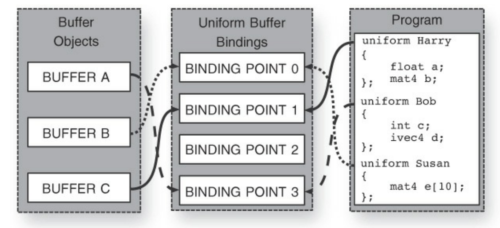
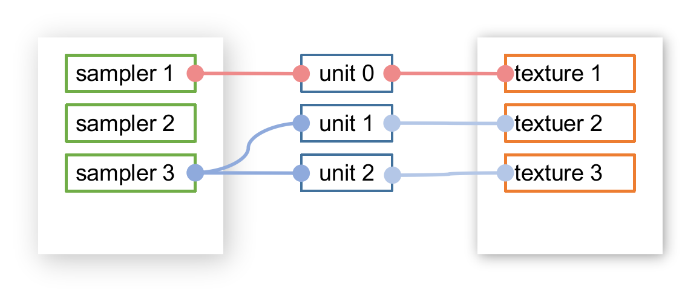
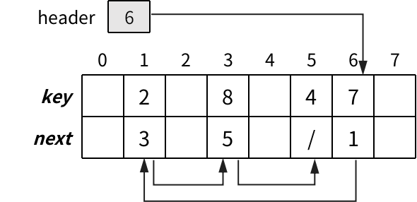
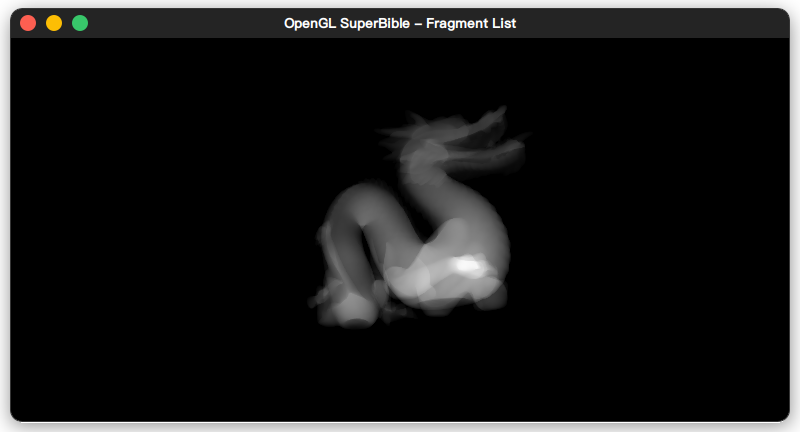

OpenGL超级宝典第七版学习笔记 (5)：数据
这是自己阅读 OpenGL 超级宝典（第七版）的笔记，使用 Rust 学习书上的示例。点击代码块上的眼睛按钮 可以展开代码，点击复制按钮 可以复制完整代码。
第五章主要介绍了 OpenGL 中两种重要的数据形式：缓冲（Buffer）和纹理（Texture）：
- 缓冲：OpenGL 里最常用的、用来存储数据的容器，可以类比成 C 里使用 malloc() 分配的一块空间，常用来存储模型的顶点数据。里面的数据线性存储，类似于一维数组。
- 纹理：用来存储多维的数据结构。最常见的应该就是 2D 纹理了，用来当作模型的贴图。
缓冲
一般用来存储顶点数据，然后作为顶点着色器的输入。也可以作为一般容器，用来在 OpenGL 程序和着色器之间传递数据。
创建缓冲区对象 / 分配空间
一般使用 glCreateBuffers() / glGenBuffers()，这两个函数功能、原型相同：
1 | void glCreateBuffers (GLsizei n, GLuint *buffers); |
- 第一个参数
n为要创建 buffer 对象的个数，也就是说这个函数可以一次性创建多个缓冲区对象 - 第二个参数是一个
GLuint类型的指针，用来存储返回的缓冲区对象
创建单个缓冲区对象：
1 | let mut buf = 0; |
创建多个缓冲区对象，第二个参数传一个数组：
1 | let mut buf = [0u32; 3]; |
OpenGL 里使用 GLuint 变量来代表通过 glCreate...() / glGen...() 创建的对象。
创建缓冲区对象之后，可以通过 glBindBuffer() 将对象绑定到当前 OpenGL 环境中：
1 | void glBindBuffer(GLenum target, GLuint buffer); |
target称为绑定点（靶点）- 最常用的 target 应该就是
GL_ARRAY_BUFFER了，用来将缓冲区作为顶点着色器的输入
- 最常用的 target 应该就是
buffer类型是 GLuint， 即之前glCreate...() / glGen...()返回的 GLuint 变量（创建的对象）
1 | let mut buf = 0; |
到这里只是创建和绑定了一个缓冲区，实际上还没有分配空间:
1 | let mut buf = 0; |
分配空间的操作主要是通过 gl[Named]BufferStorage() 来完成：
1 | void glBufferStorage(GLenum target, |
只是第一个参数不同，glBufferStorage() 传入的是缓冲区的绑定点，而 glNamedBufferStorage() 传入缓冲区对象本身。代表缓冲区对象的 GLuint 变量称为对象的名称(name)
size：分配多少内存，以字节为单位data：用来初始化（复制到） buffer 的数据，可以传递 null，这样就不会复制任何数据，如果要传入 data 对 buffer 进行初始化，data的大小必须大于等于size字节flags：只起到给 OpenGL 提供信息的作用，让 OpenGL 分配符合预期的内存
在分配内存后，无法再修改缓冲区的 size 和 flag 属性。只能将缓冲区销毁后重新创建。
给缓冲区分配 100MB 的内存空间:
1 | # use sb7::application::Application; |
调用 glNamedBufferStorage() 之前用 nvidia-smi 命令查询显存：
1 | +-----------------------------------------------------------------------------+ |
调用 glNamedBufferStorage() 之后用 nvidia-smi 命令查询显存：
1 | +-----------------------------------------------------------------------------+ |
显存占用从 2M 增加到了 102M，说明缓冲区对象的存储空间其实是分配内显存里的。
如果要使用 glBufferStorage() 的话就需要将缓冲区绑定到靶点上：
1 | use std::ptr::null; |
这两种方法功能一致。
gl[Named]BufferStorage() 的 flag 参数可能的取值：
| 标志 | 说明 |
|---|---|
| GL_DYNAMIC_STORAGE_BIT | 可以直接更新缓冲区的数据 |
| GL_MAP_READ_BIT | 缓冲区映射时，可以通过指针读取缓冲 |
| GL_MAP_WRITE_BIT | 缓冲区映射时，可以通过指针写入缓存 |
| GL_MAP_PERSISTENT_BIT | 在绘制内容时保持缓冲区映射（持久映射） |
| GL_MAP_COHERENT_BIT | 缓冲区映射图是连贯的 |
| GL_CLIENT_STORAGE_BIT | 优先将缓冲区的存储空间分配到应用内存上，而不是在显存上分配 |
OpenGL 在执行绘制命令（glDraw...()）时会结束缓冲区映射，设置 GL_MAP_PERSISTENT_BIT 则可以一直保持映射状态，会牺牲一定性能。
GL_MAP_CORCORMENT_BIT 表示缓存区在 CPU 和 GPU 之间映射是密切相关的，保证了在 CPU 或 GPU 对缓冲区的写入效果最终会对另一方可见，而不需要应用程序进一步干预。如果不设置这个标志位，只有在结束缓冲区映射或者调用 glFlushMappedBufferRange() / glMemoryBarrier() 来应用更改。
更新缓冲区的内容
gl[Named]BufferSubData() 用来将数据写入缓冲区（内存 -> 显存）
需要将 GL_DYNAMIC_STORAGE_BIT 写入 gl[Named]BufferStorage() 的 flag 参数里：
1 | void glBufferSubData(GLenum target, |
offset表示要写入的起始位置，以字节为单位size表示要写入多大的数据，以字节为单位
向缓冲区写入一组三角形的顶点数据：
1 | # use sb7::application::Application; |
也可以通过缓冲区映射，将存储在显卡的缓冲区映射到 OpenGL 应用程序的内存上，这样就可以通过指针直接写入缓冲区：
1 | # use sb7::application::Application; |
对应的原型如下，gl[Named]MapBuffer() 用来将缓冲区映射到内存上，gl[Named]UnmapBuffer() 用来结束缓冲区映射：
1 | void *glMapBuffer(GLenum target, |
access 有三种取值：GL_READ_ONLY，GL_WRITE_ONLY，GL_READ_WRITE
对应 gl[Named]BufferStorage() 的 flag 参数：GL_MAP_READ_BIT， GL_MAP_WRITE_BIT
将 Hello World 写入缓冲区，然后再读取到内存：
1 | # use sb7::application::Application; |
glMap[Named]Buffer() 映射的是整个缓冲区，如果缓冲区越大，缓冲区映射的开销就越高。也可以通过下面的函数来映射特定范围的缓冲区：
1 | void *glMapBufferRange(GLenum target, |
access 是标志位，可以的取值：
| 标志 | 说明 |
|---|---|
| GL_MAP_READ_BIT | 可以通过缓冲区映射读取 |
| GL_MAP_WRITE_BIT | 可以通过缓冲区映射写入 |
| GL_MAP_PERSISTENT_BIT | 持久映射 |
| GL_MAP_COHERENT_BIT | 缓冲映射图是连贯的 |
| GL_MAP_INVALIDATE_RANGE_BIT | 表示我们不再关心范围内数据，与 GL_MAP_READ_BIT 冲突 |
| GL_MAP_INVALIDATE_BUFFER_BIT | 表示我们不再关心整个缓冲区内的数据，与 GL_MAP_READ_BIT 冲突 |
| GL_MAP_FLUSH_EXPLICIT_BIT | 表示我们会在映射范围内修改数据 |
| GL_MAP_UNSYNCHRONIZED_BIT | 表示我们会自己会自己执行所有的同步 |
其中 GL_MAP_READ_BIT、GL_MAP_WRITE_BIT、GL_MAP_PERSISTENT_BIT、GL_MAP_COHERENT_BIT 必须和 gl[Named]BufferStorage 的 flag 相匹配，其作用相同。
GL_MAP_INVALIDATE_RANGE_BIT：在映射范围之前的数据可能会丢弃，而映射到 CPU 的那段缓冲区将会被擦除GL_MAP_INVALIDATE_BUFFER_BIT：在将缓冲区映射到 CPU 时，缓冲区内所有数据将被擦除
这里使用 0xFF 初始化缓冲区，再缓冲区内 15~45 字节 以 GL_MAP_INVALIDATE_RANGE_BIT | GL_MAP_WRITE_BIT 映射到 CPU：
1 | # use sb7::application::Application; |
print_buf() 输出如下：
1 | FF FF FF FF FF FF FF FF FF FF FF FF FF FF FF |
在缓冲区映射的时候那段内存已经被清零了。如果给 Map[Named]BufferRange() 传入 MAP_INVALIDATE_BUFFER_BIT，那么整个缓冲区在映射时会被清零
填充数据、缓冲区间复制数据
填充数据作者在整本书里就没有用过这个函数……：
1 | void glClearBufferSubData(GLenum target, |
size,offset：填充区域，字节为单位typeformat说明指向data的数据的信息type: 传入的数据类型，取值和对应的数据类型：type 对应的 OpenGL 类型 GL_BYTE GLchar GL_UNSIGNED_BYTE GLuchar GL_SHORT GLshort GL_UNSIGNED_SHORT GLushort GL_INT GLint GL_UNSIGNED_INT GLuint GL_FLOAT GLfloat GL_DOUBLE GLdouble format: 传入的数据格式RED、GREEN、BLUE、RED_INTEGER、GREEN_INTEGER、BLUE_INTEGERRG、RG_INTEGERRGB、BGR、RGB_INTEGER、BGR_INTEGERRGBA、BGRA、RGBA_INTEGER、BGRA_INTEGER
internalformat：buffer 内部存储的数据格式，参考 gl4/glClearBufferSubData
1 | # use gl::types::GLfloat; |
在缓冲区之间复制，类似于 C 里的 memcpy() 或者 strcpy()（Rust 里对应std::intrinsics::copy）:
1 | void glCopyBufferSubData(GLenum readTarget, |
glCopyBufferSubData() 需要两个不同的绑定点。 openGL 也提供了 GL_COPY_READ_BUFFER 和 GL_COPY_WRITE_BUFFER 这两个靶点，这时候就可以用上了。
1 | # use sb7::application::Application; |
将缓冲区作为顶点着色器的输入
顶点着色器的输入——顶点数组对象(vao)，用来存储顶点数组的状态，可以绑定多个缓冲区，将缓冲区的内容传入顶点着色器。创建 vao：
1 | # use gl::types::GLuint; |
建立顶点着色器里顶点属性与缓冲区的关系，将 bindingindex 对应的缓冲区作为顶点属性 attribindex 的输入：
1 | void glVertexArrayAttribBinding(GLuint vaobj, |
attribindex顶点属性的位置，可以用glGetAttribLocation()查询，或者直接在顶点着色器里指定bindingindexvao绑定的顶点缓冲区下标
glVertexArrayVertexBuffer() 用来将缓冲区挂载到 vao 上：
1 | void glVertexArrayVertexBuffer(GLuint vaobj, |
bindingindex: 可以随便设，指定缓冲区在 vao 的位置，和glVertexArrayAttribBinding()对应buffer: 要挂载到 vao 的缓冲区offset: 偏移量（起始位置），字节为单位，着色器从哪里开始读入顶点数据stride: 每个顶点数据的大小，字节为单位
将两个缓冲区对象挂载到 vao 上，分别作为着色器内两个顶点属性的输入：
1 | # use gl::types::GLuint; |
在通过 vao 搭建好缓冲区与顶点属性的桥梁之后，还需要给 OpenGL 说明顶点属性的格式（顶点属性由几个元素组成，每个元素的数据类型是什么）：
1 | void glVertexArrayAttribFormat(GLuint vaobj, |
-
size: 这个顶点属性由几个数组成：1、2、3、4 -
type: 数据类型：GL::FLOAT, GL::UCHAT 等 -
normalized: 在传入着色器之前，是否对数据进行正规化处理。浮点数不会进行正规化- 无符号整数转换成 [0.0~1.0] 的浮点数
- 有符号整数转换成 [-1.0~1.0] 的浮点数
-
relativeoffset： 相对偏移量
- 第 n 个顶点在在缓冲区的读取位置与offset, relativeoffset 的关系：
1
location = offset + n * stride + relativeoffset
之后就可以调用 glEnableVertexArrayAttrub() 来启用之前的配置了：
1 | # use gl::types::GLuint; |
完整的配置过程如下：
1 | # use gl::types::GLuint; |
结果大概长这样：
也可以将顶点属性放到一个结构体里，然后存到同一个缓冲区上：
1 | # use gl::types::GLuint; |
对于将所有顶点数据存到同一个缓冲区的情况，也可以用 glVertexAttribPointer() 向顶点着色器传入数据：
1 | void glVertexAttribPointer(GLuint index, |
index：顶点属性在着色器的位置（顶点属性）size：顶点属性包含的数据个数：1、2、3、4、……type：数据类型：GL_FLOAT、GL_UNSIGNED_BYTE……normalized：是否进行正规化处理stride：所有顶点属性的大小之和，字节为单位pointer：顶点属性数据相对与stride的位置
使用前提：
- 已经创建 vao 并绑定到 OpenGL 环境里
- 已经创建好缓冲区对象，填充数据后绑定到
GL_ARRAY_BUFFER上
用 glVertexAttribPointer() 重写上面的例子，整个配置过程非常简便：
1 | # use gl::types::GLuint; |
Uniform 变量
uniform 变量可以在任何着色器里声明，是一种很重要的数据形式，可以理解为着色器暴露给 OpenGL 应用程序的全局变量。可以在 OpenGL 应用程序里将数据直接传递给着色器。最常见的 uniform 变量应该就是变换矩阵了。
声明 uniform 变量：
1 | uniform float time; |
在着色器里不能对 uniform 变量赋值，只能在声明的时候赋初值：
1 | uniform float a = 12; |
向 uniform 变量传递数据
先用 glGetUniformLocation() 查询 uniform 变量在哪，再用 glUniform*() 给 uniform 变量传递数据（类似于赋值）：
1 | GLint glGetUniformLocation(GLuint program, |
可以在 docs.gl 查看所有的 glUniform*() 函数：https://docs.gl/gl4/glUniform
对于这两个 uniform 变量：
1 | uniform float time; |
在 OpenGL 应用程序里给它们赋值：
1 | let name = CString::new("time").unwrap(); |
也可以在着色器里直接指定 uniform 变量的位置:
1 | layout (location = 0) uniform float time; |
这样就不需要调用 GetUniformLocation() 了：
1 | gl::Uniform1f(0, 1.0); |
glUniform*() 有一组以 v 作为后缀的函数，可以传入指向数据的指针：
1 | void glUniform3fv(GLint location, |
用 Uniform4fv() 传 vec4 变量：
1 | uniform vec4 vcolor; |
1 | let vcolor = [1.0, 1.0, 1.0, 1.0]; |
传递数组，将 glUniform4fv() 的 count 设置为数组长度就行：
1 |
|
1 | # use gl::types::GLuint; |
传一维数据：
1 | let data = 1.0f32; |
传递矩阵：
1 |
|
1 | # use gl::types::GLuint; |
对应的效果如下：
glUniformMatrix4fv() 原型如下：
1 | void glUniformMatrix4fv(GLint location, |
count：矩阵个数，传 mat4 数组的时候传元素个数transpose：传递时是否将矩阵转置，如果线性代数库里的矩阵是以行优先存储的，需要设置为 GL_TRUE，来对矩阵进行转置，以符合 OpenGL 的期望格式
通过 uniform 变量设置变换矩阵
初始化顶点数据：
1 | # use gl::types::*; |
设置变换矩阵：
1 | # ... |
在窗口大小发生改变时，更新投影矩阵：
1 | # ... |
将变换矩阵和投影矩阵写入 uniform 变量：
1 | # impl Application for App { |
顶点着色器：
1 |
|
片段着色器：
1 |
|
绘制多个物体：在 render 函数里多次调用 glDrawArray 就行：
1 | # use gl::types::*; |
Uniform 区块
如果程序成千上万的 uniform 变量意味着将会有很多散落在各处的glUniform*()（难以维护）。将 uniform 变量塞到一个块结构(uniform 区块)里，uniform 区块的数据和缓冲区对象绑定，从而降低调用 glUniform*()的开销。
和 uniform 区块相绑定的缓冲区称为 ubo
声明
1 | uniform [块名] { |
1 | uniform TransformBlock |
和结构体类似，访问成员：transform.scale
如果要定义多个 TransformBlock 块实例的话，这样子是不行的：
1 | // ERROR |
只能定义成一个数组：
1 |
|
这样子就可以给 transforms[0] 和 transforms[1] 分配绑定不同的缓冲区对象了。
访问：
1 | gl_Position = transforms[0].projection_matrix * vec4(0.0); |
UBO的内存格式
- 标准布局：
- 数据类型的大小 N 字节，则数据的存储位置为 N 字节的整数倍：
- int float bool：在 glsl 占用 4 字节，在缓冲区的存储地址为 4 的整数倍
- 数据类型的大小 N 字节，则二维向量 与 2 * N 字节对齐
- vec2 的存储位置与 2 * 4 = 8 字节对齐
- 数据类型的大小 N 字节，三维、四维向量与 4 * N 字节对齐
- vec3, vec4 的存储位置与 16字节对齐
- 数组：每个元素和 4 * N 字节对齐
- 完整规则参考：OpenGL 4.6规范
7.6.2.2 Standard Uniform Block Layout - 好处：可以预知 uniform 区块内的数据位置，因为这些在标准里已经定义好了，所有 OpenGL 实现都遵循这这个标准
- 坏处：数据对进行对齐，稍微浪费空间
- 数据类型的大小 N 字节，则数据的存储位置为 N 字节的整数倍：
- shared 布局：
让 OpenGL 根据 uniform 区块的成员，自行决定其存储位置，会比标准布局高效，但是无法预知数据的存储位置，只能向 openGL 查询成员的位置后才能向 uniform 区块写入数据
使用标准布局：在 uniform 关键字前加上 layout(std140)
1 | layout(std140) uniform TransformBlock { |
内存布局如下：
- scale 的起始位置为 0 字节，占用 4 字节
- translation：类型为 vec3，与 16 字节对齐，因此起始位置为 16 字节，占用 4 * 3 = 12 字节
- rotate：每个元素与 16 字节对齐：
- rotate[0]：起始位置为 32 字节
- rotate[1]：起始位置为 48 字节
- rotate[2]：起始位置为 64 字节
- mat4：可以看成 vec4 数组，每个元素与 16 字节对齐
也可以直接指定 uniform 块内部成员的起始位置：
1 | layout(std140) uniform ManuallyLaidOutBlock { |
指定成员的对齐位置时，成员的起始位置要满足上面的规则，如果不满足的话 shader 会编译失败：
1 |
|
1 | == 0:3(27): error: layout qualifier offset must be a multiple of the base alignment of vec2 |
成员的顺序也很重要，前一个成员的内存位置必须小于后一个成员的位置：
1 |
|
1 | == 0:4(27): error: layout qualifier offset overlaps previous member |
设置最小对齐间隔：
1 | layout(std140, align = 16) uniform ManuallyLaidOutBlock { |
shared 布局 OpenGL 使用的默认布局，定义的时候不用加任何修饰符：
1 | uniform TransformBlock { |
在这个布局下，OpenGL会自己为 uniform 块的成员分配内存位置，这时候就不能自行指定成员起始位置：
1 |
|
1 | == 0:3(28): error: offset can only be used with std430 and std140 layouts |
查询 uniform 区块成员的存储位置
在 shared 布局下需要自己向 OpenGL 查询数据的位置和大小，因为OpenGL会按照自己的方式对数据的存放方式进行优化，此时在 OpenGL 程序里无法预知数据的位置，只能向 OpenGL 查询数据到底存在哪。查询过程：
查询某一成员在 uniform 区块里的位置：
1 | void glGetUniformIndices(GLuint program, |
program：uniform 区块所在的着色器程序count：要查询的成员个数，一般传uniformNames数组的元素个数uniformNames：要查询的成员，字符串数组uniformIndices：保存返回的成员位置
1 | uniform TransformBlock { |
1 | # use gl::types::*; |
通过返回的 uniformIndices 数组和 glGetActiveUniformsiv() 查询成员在缓冲区的位置、占用大小等信息：
1 | void glGetActiveUniformsiv(GLuint program, |
-
uniformIndices、uniformCount：之前glGetUniformIndices()返回的数组 -
pname：要查询的信息：pname 的取值 说明 GL_UNIFORM_TYPE 成员数据类型 GL_UNIFORM_SIZE 成员是数组的话返回数组元素个数，不是数组返回 1 GL_UNIFORM_NAME_LENGTH 成员名称字符串长度 GL_UNIFORM_BLOCK_INDEX 成员所属区块的索引 GL_UNIFORM_OFFSET 成员在区块内的存储位置 GL_UNIFORM_ARRAY_STRIDE 如果成员是数组，返回数组每个元素的大小，如果不是数组返回 0 GL_UNIFORM_MATRIX_STRIDE 如果成员是矩阵，返回矩阵每列（每行）的大小，如果不是矩阵返回 0 GL_UNIFORM_IS_ROW_MAJOR 如果成员是行优先矩阵返回 1，否则返回 0 -
params：查询返回结果
1 | # use gl::types::*; |
这样就得到各个成员在缓冲区的位置和占用大小了：
1 | # use gl::types::*; |
1 | rotate: offset = 28, stride = 4 |
1 | uniform TransformBlock { |
1 | let uniform_names = [CString::new("TransformBlock.rotate"), |
在查询 uniform 区块的内存布局之后，分配内存，写入数据。最简单的情况，写入 float 变量：
1 | let data = Box::new([0u8; 4096]); |
写入 vec3 变量：
1 | unsafe { |
写入数组：
1 | let rotates: [f32; 3] = [30.0, 40.0, 50.0]; |
写入 mat4 变量：
1 | // 以列为主的矩阵 |
绑定 uniform 区块和缓冲区对象
创建缓冲对象，将上面准备好的内存写入缓冲：
1 | # use gl::types::*; |
用 glBindBufferBase() 将缓冲区绑定到 GL_UNIFORM_BUFFER：
1 | void glBindBufferBase(GLenum target, |
index：自己给缓冲区指定的绑定下标，后面调glUniformBlockBinding()的时候要用
1 | # use gl::types::*; |
用 glGetUniformBlockIndex() 查询 uniform 区块的位置：
1 | GLuint glGetUniformBlockIndex(GLuint program, |
1 | # use gl::types::*; |
最后用 glUniformBlockBinding() 将缓冲区对象与 uniform 区块向绑定：
1 | void glUniformBlockBinding(GLuint program, |
uniformBlockIndex：glGetUniformBlockIndex()返回的 uniform 区块下标uniformBlockBinding：缓冲区对象调用glBindBufferBase()时设置的index
这样就完成了缓冲区对象和 uniform 区块之间的绑定
缓冲区对象和 uniform 区块之间的关系：

上图对应的处理代码如下：
1 | let [harry_index, bob_index, susan_index] = ["Harry", "Bob", "Susan"] |
uniform 区块的绑定的缓冲区对象下标也可以在着色器里指定：
1 | layout (binding = 1) uniform Harry { |
这样子就可以删除 UniformBlockBinding() 函数了：
1 | gl::BindBufferBase(gl::UNIFORM_BUFFER, 1, buf_c); |
回到之前使用标准布局的 uniform 区块，根据规范可以推断出各个成员的位置：
1 | layout(std140) uniform TransformBlock { |
现在可以用 glGetActiveUniformsiv() 来验证了：
1 | # use std::ffi::CString; |
着色器存储区块
和 uniform 区块类似，着色器存储区块也需要绑定一块缓冲区对象以存储数据。除了用来向着色器传递数据以外，着色器也可以向着色器存储区块写入数据。
- 和 uniform 区块的相似之处：
- 声明：和 uniform 区块类似，只是将 uniform 关键字替换成 buffer
- 绑定缓冲区：也是用
glBindBufferBase()，只是将GL_UNIFORM_BUFFER换成GL_SHADER_STORAGE_BUFFER - 可以指定内存布局：std140 std430
- OpenGL 应用程序都可以通过缓冲区映射读取区块内的数据。
- 不同之处：
- 着色器可以向着色器存储区块写入数据
- 支持原子操作(读取-编辑-写入 --> 不可分割)
声明
1 |
|
原子操作
只有 32 位整型（int 和 uint）才支持原子操作，可以避免数据竞争：
| Syntax | Description |
|---|---|
| uint atomicAdd(inout uint mem, uint data) int atomicAdd(inout int mem, int data) |
从 mem 读数据，将其和 data 相加，结果存入 mem。返回值：mem 之前的值 mem <- mem + data |
| uint atomicMin(inout uint mem, uint data) int atomicMin(inout int mem, int data) |
从 mem 读数据，将其和 data 取最小值，结果存入 mem。返回值：mem 之前的值 mem <- mem.min(data) |
| uint atomicMax(inout uint mem, uint data) int atomicMax(inout int mem, int data) |
从 mem 读数据，将其和 data 取最大值，结果存入 mem。返回值：mem 之前的值 mem <- mem.max(data) |
| uint atomicAnd(inout uint mem, uint data) int atomicAnd(inout int mem, int data) |
从 mem 读数据，将其和 data 按位求逻辑与，结果存入 mem。返回值：mem 之前的值 mem <- mem & data |
| uint atomicOr(inout uint mem, uint data) int atomicOr(inout int mem, int data) |
从 mem 读数据，将其和 data 按位求逻辑或，结果存入 mem。返回值：mem 之前的值 mem <- mem | data |
| uint atomicXor(inout uint mem, uint data) int atomicXor(inout int mem, int data) |
从 mem 读数据，将其和 data 按位异或，结果存入 mem。返回值：mem 之前的值 mem <- mem xor data |
| uint atomicExchange(inout uint mem, uint data) int atomicExchange(inout int mem, int data) |
从 mem 读数据，将 data 写入 mem。返回值：mem 之前的值 mem <- data |
| uint atomicCompSwap(inout uint mem, uint compare, uint data) int atomicCompSwap(inout int mem, int compare, int data) |
从 mem 读数据，如果读到的数据和 comp 相等，将 data 写入 mem。返回值：mem 之前的值 if mem == comp { mem <- data } |
同步访问内存
当着色器开始将数据写入缓冲区时（向着色器存储区块里的成员赋值，或者通过原子操作函数写入着色器存储区块），可能会引发内存风险
内存风险大概分为三类：
- 先读后写(RAW)风险：当程序在写入一块内存后尝试读取时，根据系统架构，读写操作可能被重新排序，使得读在写之前完成，导致旧数据返回应用程序
- 先写后写（WRW)风险：当程序连续两次写入同一块内存时，在某些架构下，无法保证第二个数据会覆盖第一个数据，导致最终进入内存的是第一个数据
- 先写后读风险（WAR）风险：只在并行处理系统里（如GPU）出现，当一个执行线程在另一线程认为自己已经读取内存后尝试将数据写入内存时会发生此风险。如果这些操作被重新排序，执行读操作的线程会读取到第二个线程写入的数据。
运行 OpenGL 的系统具有较强的管线和并行特点，包含了大量缓解和控制内存风险的机制。如果没有这些功能，OpenGL实现需要更加保守地重排和并行运行这些着色器。处理内存风险的主要工具为内存屏障（memory barrier）。
内存屏障基本上是一个助记符，指示 OpenGL “如果准备重新排序，需要先完成之前发送的命令，不要执行之后的命令” ，可以在 OpenGL 应用程序和着色器里插入屏障。
在 OpenGL 应用程序内使用屏障
在 OpenGL 应用程序的代码里插入 glMemoryBarrier()：
1 | void glMemoryBarrier(GLbitfield barriers); |
barriers 用来说明哪些内存会受内存屏障的影响，哪些可以忽略内存屏障继续运行：
GL_ALL_BARRIER_BITS：对所有的内存子系统进行同步GL_SHADER_STORAGE_BARRIER_BIT：只有在屏障之前的着色器完成数据的访问之后，才允许屏障之后的着色器运行GL_UNIFORM_BARRIER_BIT：只有在写入缓冲的着色器结束后，才允许屏障后以该缓冲作为 uniform 区块的着色器运行GL_VERTEX_ATTRIB_ARRAY_BARRIER_BIT：等待向缓冲写入数据的着色器完成后，才允许将该缓存作为顶点属性输入的着色器运行
在着色器内使用屏障
在着色器里插入 memoryBarrier()：
1 | void memoryBarrier(); |
也可以使用更为具体的函数：memoryBarrierBuffer()
原子计数器
一种特殊类型的变量，表示跨多个着色器调用共享的存储。
- 原子计数器的值存储在缓冲区对象里，GLSL中提供了递增和递减原子计数器的函数。
- 如果两个着色器调用同时递增同一个原子计数器，OpenGL会让它们轮流执行。不能保证这些操f作将发生的顺序，但能保证结果正确。
在着色器内声明原子计数器：
1 | layout (binding = 0) uniform atomic_uint my_variable |
binding 代表原子计数器和缓冲区对象之间的绑定点。
每个原子计数器存储在缓冲区对象中的特定偏移量处。这个偏移量可以通过 offset 限定符指定：
1 | layout (binding = 3, offset = 8) uniform atomic_uint my_variable; |
存储原子计数器的缓冲区对象需要绑定到 GL_ATOMIC_COUNTER_BUFFER 上：
1 | # use gl::types::*; |
初始化存储原子计数器的缓冲区对象：
1 | # use gl::types::*; |
在初始化 buffer，并将和原子计数器绑定后，就可以在 shader 内使用原子计数器计数了。
递增计数器：
1 | uint atomicCounterIncrement(atomic_uint c); |
这个函数从原子计数器读取值，将其加一，返回原来读到的值。
递减计数器：
1 | uint atomicCounterDecrement(atomic_uint c); |
这个函数返回减一后的值。
查询原子计数器的值：
1 | uint atomicCounter(atomic_uint c); |
通过原子计数器来计算渲染对象在屏幕上的面积：
1 |
|
这个片段着色器并没有输出（out 变量），不会向帧缓冲写入任何数据。在运行这个着色器时，可以关闭向帧缓冲的写入：
1 | gl::ColorMask(GL::FALSE, GL::FALSE, GL::FALSE, GL::FALSE); |
等到需要渲染的时候再重新启用对缓冲区的写入：
1 | gl::ColorMask(GL_TRUE, GL_TRUE, GL_TRUE, GL_TRUE); |
在使用原子计数器后，存储原子计数器的缓冲区可以绑定到其他目标上，如 GL_UNIFORM_BUFFER，之后就可以通过 uniform 区块来使用原子计数器的值了：
1 |
|
在 startup() 里可以同时将缓冲区对象绑定到 GL_ATOMIC_COUNTER_BUFFER 和 GL_UNIFORM_BUFFER，这样子这块缓冲就可以同时用作原子计数器和 uniform区块了：
1 | # use sb7::{application::*, vmath::*}; |
在 render 函数里，先使用原子计数器进行计数，再读取一致区块内的原子计数器的值，来渲染物体：
1 | # use sb7::{application::*, vmath::*}; |
WebGL 里并没有原子计数器，这里只是使用 gl_FragCoord.z 值模拟上面代码的结果，毕竟跑起来的效果差不多。物体里摄像机越近，在屏幕空间上占据的像素点就越多，亮度越亮：
原子计数器的同步访问
- 原子计数器其实是缓冲区对象中的一个位置，当着色器执行时，他们的值可能驻留在GPU的特殊内存中，当着色器执行完毕时，原子计数器的值将被写回内存。
- 原子计数器的递增和递减被认为是内存操作的一种形式，可能会受到之前描述的内存风险影响。
glMemoryBarrier 可以将对原子计数器的访问与 OpenGL 管道的其他部分进行同步：
1 | glMemoryBarrier(GL_ATOMIC_COUNTER_BARRIER_BIT); |
- 这个函数调用确保了OpenGL 应用程序对缓冲区对象内的原子计数器进行修改，那么着色器会使用更新后的值。
- 在将数据写入缓冲区时，应该调用这个函数，同步着色器访问到的值。
glsl 内部类似的函数：
1 | memoryBarrierAtomicCounter(); |
这个函数会等待，直到对原子计数器的操作结束后才退出。
纹理
- 一种结构化的存储形式，着色器可以对其进行读写操作
- 常用于存储图像数据
- 最常见的纹理布局是二维的，但是纹理也可以在一维或三维布局、数组形式（多个纹理堆叠在一起形成一个逻辑对象）、立方体中创建
创建、初始化纹理
- 创建纹理，设置纹理类型（
glCreateTextures()） - 设置纹理大小，分配空间（
glTexStorage2D()）
用 glCreateTextures() 创建纹理对象，然后使用 glTexStorage2D() 函数为纹理分配存储空间，使用glBindTexture() 将其绑定到GL_TEXTURE_2D目标：
1 | use gl::*; |
使用 glTexSubImage2D() 向纹理对象写入数据：
1 | # use std::{ffi::CString, ptr::{null, null_mut}}; |
纹理目标和类型
| 纹理目标（GL_TEXTURE_*） | 描述 |
|---|---|
| 1D | 一维纹理 |
| 2D | 二维纹理 |
| 3D | 三维纹理 |
| RECTANGLE | 矩形纹理 |
| 1D_ARRAY | 一维数组纹理 |
| 2D_ARRAY | 二维数组纹理 |
| CUBE_MAP | 立方体贴图纹理 |
| CUBE_MAP_ARRAY | 立方体贴图数组纹理 |
| BUFFER | 缓冲区纹理 |
| 2D_MULTISAMPLE | 二维多重采样纹理 |
| 2D_MULTISAMPLE_ARRAY | 二维数组多重采样纹理 |
- GL_TEXTURE_2D：最常使用的纹理，标准二维图像，代表一张图片
- GL_TEXTURE_1D、GL_TEXTURE_3D：一维和三维纹理
- GL_TEXTURE_1D 可以看成高度为 1 的二维纹理
- GL_TEXTURE_3D 可以用来表示体积，内部使用三维纹理坐标
- GL_TEXTURE_RECTANGLE：是二维纹理的特例，它们在着色器中的读取方式和它们支持的参数方面有细微的差异。
- GL_TEXTURE_1D_ARRAY、GL_TEXTURE_2D_ARRAY：表示聚集到单个对象中的纹理图像数组
- GL_TEXTURE_CUBE_MAP：立方体贴图纹理，形成一个立方体的六个正方形图像的集合，可以用来模拟光照环境
- GL_TEXTURE_CUBE_MAP_ARRAY：和 GL_TEXTURE_1D_ARRAY、GL_TEXTURE_2D_ARRAY 类似，表示一个立方体贴图数组的纹理
- GL_TEXTURE_BUFFER：缓冲区纹理、一种特殊类型的纹理，类似于一维纹理，只不过其存储是由缓冲区对象表示的。最大尺寸可以比一维纹理大得多。
- GL_TEXTURE_2D_MULTISAMPLE、GL_TEXTURE_2D_MULTISAMPLE_ARRAY：用于多重采样抗锯齿（MSAA），提高图像质量
在着色器里读取纹理数据
- 在创建并向纹理写入数据后，可以在着色器读取纹理数据来为片段着色
- 着色器中代表纹理的数据类型为采样器，不同的纹理类型对应不同的采样器类型
- 二维纹理的采样器类型：Sampler2D
在声明采样器变量后，通过 texture() 函数读取纹理坐标下的数据：
1 |
|
采样器类型
每种纹理对应的采样器：
| 纹理目标 | 采样器类型 |
|---|---|
| GL_TEXTURE_1D | sampler1D |
| GL_TEXTURE_2D | sampler2D |
| GL_TEXTURE_3D | sampler3D |
| GL_TEXTURE_RECTANGLE | sampler2DRect |
| GL_TEXTURE_1D_ARRAY | sampler1DArray |
| GL_TEXTURE_2D_ARRAY | sampler2DArray |
| GL_TEXTURE_CUBE_MAP | samplerCube |
| GL_TEXTURE_CUBE_MAP_ARRAY | samplerCubeArray |
| GL_TEXTURE_BUFFER | samplerBuffer |
| GL_TEXTURE_2D_MULTISAMPLE | sampler2DMS |
| GL_TEXTURE_2D_MULTISAMPLE_ARRAY | sampler2DMSArray |
纹理存储的数据类型与采样器的关系：
- 存储浮点数据的纹理：sampler1D,…
- 存储有符号整数的纹理：添加前缀i，isampler1D, …
- 存储无符号整数的纹理：添加前缀u，usampler1D, …
内置函数 texelFetch() 读取着色器中的纹理：
1 | vec4 texelFetch(sampler1D s, int P, int lod); |
- s：纹理的采样器变量
- P：纹理坐标
- lod：分级细化等级
虽然纹理对象的数据格式不同，这些函数都返回四维向量。如果纹理通道小于 4 (RGBA)，则绿色通道和蓝色通道的默认值为0，而alpha通道的默认值为1
内置函数 textureSize() 用来查询纹理尺寸：
1 | int textureSize(sampler1D sampler, int lod); |
查询多重采样纹理的采样数：
1 | int textureSamples(sampler2DMS sampler); |
从文件载入纹理
- ktx（Khronos纹理格式）：专门为存储 OpenGL 纹理的东西而设计的。
- .ktx文件包含了大多数需要传递给 OpenGL 的参数，以便直接从文件加载纹理。
用《OpenGL 超级宝典》里自带的函数载入：
1 | let tex = sb7::ktx::file::load("media/textures/tree.ktx").unwrap().0; |
也可以使用第三方库（如 stb_image）自己载入图片，只需要在 Cargo.toml 里添加依赖：
1 | [dependencies] |
比如要载入这样一张图片：
读取图片像素过程：
1 | # use sb7::application::*; |
通过载入的图片数据创建纹理对象：
1 | # use sb7::application::*; |
效果大概是这样子：
纹理坐标
在着色器里一般会用 texture() 来读取纹理数据，一张纹理对应的坐标范围为 0.0 ~ 1.0：

- 但其实可以将纹理坐标设置为任意值，超出 0.0 ~ 1.0 的部分，OpenGL 会将纹理按照一定的方式进行平铺处理
- 纹理坐标一般会作为顶点属性传入顶点着色器，然后输出到片段着色器，中间的像素的纹理坐标由 GPU 生成
顶点数据：
1 | let vertex_position : &[f32]= &[ |
对应的顶点着色器：
1 |
|
片段着色器：
1 |
|
通过向每个顶点传递纹理坐标，可以将纹理环绕在物体周围。
纹理坐标一般使用建模软件进行分配，并存储模型文件里。将棋盘格图案加载到纹理中，并将其应用到模型上，效果如下:
控制纹理数据的读取方式
OpenGL 在读取纹理数据的方式十分灵活，纹理坐标的范围一般是规范化的，在0.0 到 1.0之间，在 OpenGL 里，用来控制纹理读取方式的对象为采样器对象，其中包含了两种常用的属性：
- WRAP_MODE：环绕方式，当纹理坐标超出 0.0 ~ 1.0 时，控制 OpenGL 如何读取纹理像素
- FILTER_MODE：过滤方式，当纹理在渲染时被缩放时，控制 OpenGL 对像素的采样方式
创建采样器对象：
1 | void glCreateSamplers(GLsizei n, GLuint * samplers); |
设置采样器属性：
1 | void glSamplerParameteri(GLuint sampler, |
您将需要绑定一个采样器对象才能使用它，但在这种情况下，您将它绑定到一个纹理单元，就像您将纹理绑定到一个纹理单元一样。用于将采样器对象绑定到纹理单元之一的函数是glBindSampler()，其原型是:
1 | void glBindSampler(GLuint unit, GLuint sampler); |
1 | use gl::*; |
glBindSampler() 的第一个参数 unit 指的是纹理单元，本质上纹理单元只是一个大于等于 0 的整数，可以看成纹理对象和采样器对象之间的桥梁。除了调用 glBindSampler() 以外，还需要用 glBindTextureUnit() 为纹理对象指定纹理单元：
1 | void glBindTextureUnit(GLuint unit, |
纹理单元、纹理对象、采样器对象之间的关系如下，每个纹理单元只能和一个纹理对象绑定：

其实类似的配置过程之前已经用过了，配置 vao 的时候，vbo 和顶点属性之间也隔着一个 binding index。这样的好处是提供了足够的灵活性：
- 可以将多个纹理绑定到相同的采样器上，这样就不用为每个纹理对象单独配置
- 如果需要修改纹理的参数的话，直接更新绑定点就行
- 可以将多个采样器绑到同一个纹理单元上
其实每个纹理对象已经内置了默认的采样器，用 glTextureParameteri() / glTextureParameterf() 也可以直接设置纹理对象的属性：
1 | void glTextureParameterf(GLuint texture, |
如果需要在同一个着色器中使用多个纹理，需要将纹理绑定到不同的纹理单元：
1 | GLuint textures[3]; |
然后在着色器里创建对应的 sampler 变量:
1 | layout (binding = 0) uniform sampler2D foo; |
当然也可以创建 sampler 变量的数组，效果其实是一样的：
1 | layout (binding = 0) uniform sampler2D samplers[3]; |
下面看一个简单的例子，在着色器里定义 sampler2D 数组，在立方体的每个面渲染下面的图片，每张大小为 24x24：
在片段着色器里定义 sampler2D 数组：
1 |
|
tex_tc 代表纹理坐标，face_index 表示第几个面。对应的顶点着色器：
1 |
|
顶点数据（太长了自行展开，或者点击复制按钮）：
1 | let vertex_position : &[f32]= &[ |
读取纹理数据，分配纹理单元：
1 | # use sb7::application::*; |
创建采样器对象，设置参数，将采样器对象绑定到纹理对象上：
1 | # use sb7::application::*; |
纹理过滤
纹理的大小与实际上渲染在屏幕上的大小一般都不是一比一的关系，会进行缩放与拉伸。GL_TEXTURE_MIN_FILTER / GL_TEXTURE_MAG_FILTER 用来设置纹理的缩放方式，MIN 表示纹理被缩小时采用的缩放方式，MAG 代表纹理放大时采用的方式，可能的取值：
- GL_NEAREST：邻近采样，纹理缩放时会使用离纹理坐标最近的像素点
- GL_LINEAR：线性采样，纹理缩放时会将纹理坐标附近的点求和取平均值
用 glTexParameter() / glSamplerParameter() 来设置纹理的过滤方式：
1 | gl::TextureParameteri(gl::TEXTURE_2D, |
效果如下，左边是 GL_LINEAR ，右边是 GL_NEARST，原图是一张很小的图片，在渲染时被放大了：
多级渐远纹理（mipmap）
在书里被翻译成 mip 贴图。是一种强大的纹理技术，在可以提高渲染性能同时提高场景质量，主要解决了渲染纹理时遇到的两个问题：
- 闪烁：纹理在屏幕上的显示大小远远小于纹理的实际大小的时候发生，在移动场景的时候会更加明显：
可以点击
Enable mipmap filter查看启用多级渐远纹理之后的效果 - 性能问题：渲染远处纹理时，往往只读取纹理的一小部分数据（浪费）
解决办法是在渲染远处纹理时，使用较小的纹理贴图，这其实也就是多级渐远纹理的功能。多级渐远纹理由一系列纹理图像组成，每一层在各轴上缩小二分之一：

分级细化纹理的总层数在分配空间时通过 glTexStorage2D() 的 levels 参数指定：
1 | void glTexStorage2D(GLenum target, |
将 256x256 的 2D 纹理的多级渐远纹理设置为 5：
1 | gl::TexStorage2D(gl::TEXTURE_2D, // 已经绑到 TEXTURE_2D 的纹理 |
这里将总层数设置成 5，第 0 层大小为 256x256，即原始数据，第 1 层大小为 128x128，第二层大小为 64x64，以此类推，第 4 层的大小为 16x16。因为总层数是 5，多级渐远纹理渲染最小图像大小为 16x16。
向多级渐远纹理设置图像数据，一般有两种方式：
- 用
glTexSubImage2D()写入第 0 层的数据（原始数据，之前一直用的这种方式设置纹理数据），然后用glGenerateMipmap()让 OpenGL 自己生成纹理的缩小版本，生成剩下的层数（方便）：
1 | gl::TexSubImage2D(gl::TEXTURE_2D, 0, |
- 用
glTexSubImage2D()手动为每一层写入图像数据，书上用来载入 ktx 文件的代码里也有类似的逻辑：
1 | gl::TexSubImage2D(gl::TEXTURE_2D, 0, 0, 0, 256, 256, |
多级渐远纹理需要设置过滤方式后才会生效，GL_TEXTURE_MIN_FILTER 需要设置成以下选项之一：
| 过滤方式 | 描述 |
|---|---|
| GL_NEAREST_MIPMAP_NEAREST | 使用最邻近的多级渐远纹理来匹配像素大小，并使用邻近插值进行纹理采样 |
| GL_LINEAR_MIPMAP_NEAREST | 使用最邻近的多级渐远纹理来匹配像素大小，并使用线性插值进行纹理采样 |
| GL_NEAREST_MIPMAP_LINEAR | 在两个最匹配像素大小的多级渐远纹理之间进行线性插值，使用邻近插值进行采样 |
| GL_LINEAR_MIPMAP_LINEAR | 在两个最匹配像素大小的多级渐远纹理之间进行线性插值，使用线性插值进行采样 |
格式类似于 GL_<selector>_MIPMAP_<filter>，selector 用来说明用哪一层，filter 用来说明选好哪层后，如何缩放纹理。
GL_TEXTURE_MIN_FILTER 只需要设置成 GL_NEARST 或 GL_LINEAR：
1 | gl::TexParameteri(gl::GL_TEXTURE_2D,gl::GL_TEXTURE_MIN_FILTER, |
启用 GL_LINEAR_MIPMAP_LINEAR 效果如下：
环绕方式
环绕方式指定了当纹理坐标超出 0.0 ~ 1.0 的范围时，OpenGL 以何种方式平铺图像。
需要将 GL_TEXTURE_WRAP_S / GL_TEXTURE_WRAP_T / GL_TEXTURE_WRAP_R 作为 glTexParameter() / glSamplerParameter() 的 pname 参数传入。GL_TEXTURE_WRAP_S、GL_TEXTURE_WRAP_T 代表纹理坐标的方向，str 与 xyz 是等价的。对应的取值如下：
| 环绕方式 | 说明 |
|---|---|
| GL_REPEAT | 正常平铺 |
| GL_MIRRORED_REPEAT | 镜像平铺 |
| GL_CLAMP_TO_EDGE | 拉伸边缘像素 |
| GL_CLAMP_TO_BORDER | 在 0~1 内绘制纹理，超出的部分用纯色填充 |
1 | gl::TexParameteri(gl::TEXTURE_2D, gl::TEXTURE_WRAP_S, gl::REPEAT as _); |
如果要使用 GL_CLAMP_TO_BORDER，需要先将 GL_TEXTURE_BORDER_COLOR 传入 glSamplerParameterfv() / glTexParameterfv() 来设置要填充的纯色：
1 | let color = [0.0, 0.1, 0.6, 1.0f32]; |
GL_TEXTURE_BORDER_COLOR、GL_MIRRORED_REPEAT、GL_CLAMP_TO_EDGE、GL_REPEAT 对应的效果：
还有一种特殊的环绕方式：GL_MIRROR_CLAMP_TO_EDGE，可以看成 GL_MIRRORED_REPEAT 和 GL_CLAMP_TO_EDGE 的组合，只将纹理进行一次镜像平铺，之后拉伸边缘像素：
数组纹理
可以类比为一个相册，将相同尺寸的纹理数据塞到一个对象里，这个对象就是数组纹理，和数组类似，可以根据元素的下标访问里面的元素。其实和多级渐远纹理类似，都是在同一个对象里存储多张纹理数据。
OpenGL 支持 1D、 2D 数组纹理，也支持立方体贴图数组纹理。但还不支持 3D 数组纹理。
创建、初始化 2D 数组纹理：
1 | let mut tex = 0; |
有意思的是，分配空间，填充数据用的函数是 glTexStorage3D() / TexSubImage3D()，参数 depth / z 用来表示元素的下标。
在着色器里和 2D 数组纹理对应的采样器是 sampler2DArray，可以用 texture() 来读取数组元素：
1 | vec4 texture (sampler2DArray sampler, vec3 P) |
P 的 xy 分量代表 2D 纹理的纹理坐标，z 分量表示数组纹理的下标：
1 |
|
这是书里示例 alienrain 的片段着色器，传入片段着色器的变量里，tc 表示要读取的纹理坐标，alien 表示要读取的纹理下标。
这个示例大概长这样：
在着色器中向纹理写入数据
OpenGL 里通过 image 变量来向纹理写入数据。sampler 变量代表整个纹理，而 image 变量代表纹理持有的图像数据。
image 变量的类型与其对应的纹理：
| 变量类型 | 对应纹理 |
|---|---|
| iamge1D | 1D 纹理 |
| iamge2D | 2D 纹理 |
| iamge3D | 3D 纹理 |
| iamgeCube | 立方体贴图纹理 |
| iamgeCubeArray | 立方体贴图数组纹理 |
| iamgeRect | 矩形纹理 |
| iamge1DArray | 1D 数组纹理 |
| iamge2DArray | 2D 数组纹理 |
| iamgeBuffer | 缓冲纹理 |
| iamge2DMS | 2D 多重采样纹理 |
| iamge2DMSArray | 2D 多重采样数组纹理 |
在着色器里声明 image 变量：
1 | uniform image2D my_image |
在着色器里 载入 / 写入 image 变量：
1 | vec4 imageLoad(readonly image2D image, ivec2 P); |
这里坐标纹理 P 是整数向量，说明其范围是在整个纹理数据里查找的。假设纹理的大小为 256x256，那么 P 的有效范围为 (0, 0) ~ (255, 255)。
iimage 和 uimage 变量代表内部存储整型的纹理图像，对应的存取函数为：
1 | ivec4 imageLoad(readonly iimage2D image, ivec2 P); |
用 glBindImageTexture() 将纹理对象绑到 图像单元 上，这样就可以指定 image 变量存取的纹理了：
1 | void glBindImageTexture(GLuint unit, |
uint：图像单元，大于等于 0 的整数，类似与纹理单元，和 image 变量相关texture：要绑定的纹理对象，用来存储 image 变量的数据level：要绑定哪一层多级渐远纹理layered：与数组纹理有关，如果设置为gl_FALSE，将绑定整个数组，设置为GL_TRUE则绑定其中一个元素layer：与数组纹理有关，指定要要绑定的数组元素。layered为GL_FALSE时忽略access：权限：GL_READ_ONLY、GL_WRITE_ONLY、GL_READ_WRITEformat：image 变量存取的数据格式，与glTextureStorage**()里设置的格式相关，常用的格式有GL_RGBA32F、GL_RGBA8，完整的列表可以查阅 docs.gl
需要给 image 变量添加格式修饰符，和 glBindImageTexture() 的 format 对应：
1 | layout (binding = 0, rgba32ui) readonly uniform uimage2D image_in; |
在 image 对象之间复制数据：
1 |
|
在多个着色器调用同时读写 image 变量时，需要通过原子操作来保证结果的正确性。
在 image 变量上的原子操作
原子操作是指一段不可分割的读取——修改——写入序列。重点在于不可分割，多个对象对同一存储进行原子操作可以保证结果正确。image 变量上支持的原子操作：
| 函数 | 说明 |
|---|---|
| uint imageAtomicAdd (image2D image, ivec2 P, uint data) | 在 P 处读取数据，与 data 相加，结果写入 image，返回原来读到的值 |
| uint imageAtomicMin (image2D image, ivec2 P, uint data) | 在 P 处读取数据，与 data 求最小值，结果写入 image，返回原来读到的值 |
| uint imageAtomicMax (image2D image, ivec2 P, uint data) | 在 P 处读取数据，与 data 求最大值，结果写入 image，返回原来读到的值 |
| uint imageAtomicAnd (image2D image, ivec2 P, uint data) | 在 P 处读取数据，与 data 求逻辑与，结果写入 image，返回原来读到的值 |
| uint imageAtomicOr (image2D image, ivec2 P, uint data) | 在 P 处读取数据，与 data 求逻辑或，结果写入 image，返回原来读到的值 |
| uint imageAtomicXor (image2D image, ivec2 P, uint data) | 在 P 处读取数据，与 data 进行异或，结果写入 image，返回原来读到的值 |
| uint imageAtomicExchange (image2D image, ivec2 P, uint data) | 在 P 处读取数据，将 data 写入 image，返回原来读到的值 |
| uint imageAtomicCompSwap (image2D image, ivec2 P, uint compare, uint data) | 将在 P 处读取的数据和 compare 比较，如果相等，将 data 写入 image，image，返回原来读到的值 |
可以通过 image 变量的原子操作，在着色器内实现一些数据结构，如单向链表。虽然着色器内没有指针类型，但可以通过数组实现链表。数组表示的链表结构如下：
key 代表存储的元素，next 代表下一个元素的位置，header为头指针，指向第一个元素。上面链表存储的元素：[7, 2, 8, 4]
着色器内链表的实现需要三块内存：
- 第一块用来存储链表元素，可以用着色器存储区块存储
- 第二块用来存储元素个数，可以用原子计数器存储
- 第三块用来存储头指针，可以用 image 变量存储，同时存储大量链表
添加元素的过程（头插法）：
- 用
atomicCounterIncrement()将元素个数加1，返回要插入的下标 - 用
imageAtomicExchange()更新头指针，返回前一个元素的下标 - 填充数据，将新元素的 next 设置为前一个元素的下标
1 |
|
gl_FrontFacing 是着色器的内置变量，判断图形是否处于正面
在初始化时，原子计数器内的值为 0，head_pointer 内的数据可以设置为 uint 的最大值 0xFFFFFFFF，表示 nil。插入第一个元素，index = 0，old_index = nil，item[0].next = nil
遍历链表，只需要查询 next 是不是 nil 就行：
1 |
|
运行截图（源码）：

同步存取图像
1 | // c |
对应的着色器函数：
1 | memoryBarrierImage() |
用来保证屏障前所有对 image 对象的读写的着色器都完成后，才执行之后使用 image 对象的着色器。